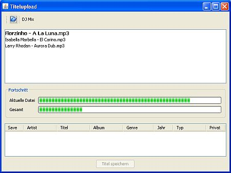
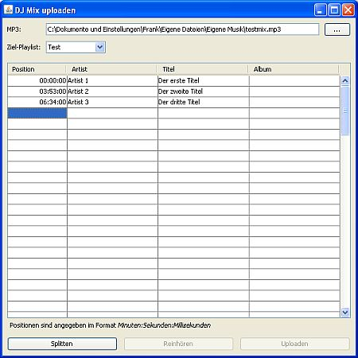

Titel direkt uploaden
Du kannst mit Station Admin Titel auf den laut.fm-Server uploaden. Klicke dazu entweder auf den  Upload-Button in der Toolbar oder wähle aus dem -Menü .
Upload-Button in der Toolbar oder wähle aus dem -Menü .
Die Funktionalität entspricht in etwa der des Upload-Dialogs im laut.fm-Radioadmin. Du kannst über den  Öffnen-Button einen Filedialog öffnen und Titel zum Upload auswählen. Alternativ kannst Du mp3-Dateien per Drag & Drop in die Upload-Liste einfügen.
Öffnen-Button einen Filedialog öffnen und Titel zum Upload auswählen. Alternativ kannst Du mp3-Dateien per Drag & Drop in die Upload-Liste einfügen.
Der Titel der aktuell hochgeladen wird steht oben in der Liste und wird fett dargestellt. Noch nicht hochgeladene Titel stehen weiter unten in der Liste. Du kannst jederzeit einen Titel auswählen und mittels der Entfernen-Tase aus der Liste entfernen. Du kannst auch während der Upload läuft weitere Titel hinzufügen.
In der Mitte werden zwei Fortschrittsbalken angezeigt: Der obere zeigt den Fortschritt für den aktuellen Titel an, der untere den Gesamtfortschritt für alle Titel.
Beachte bitte dass die Titel auf dem laut.fm-Server noch einmal neu codiert werden. Das dauert einen Moment. In dieser Zeit steht der obere Fortschrittsbalken für einige Zeit auf 100%.
Nach erfolgreichem Upload werden die Titel unten noch einmal aufgelistet. Du kannst jetzt noch einmal die Titelinformationen bearbeiten bevor Du die Titel mit freigibst.
Du kannst übrigens Informationen für mehrere Titel auf einmal ändern: Wähle die Titel aus und öffne im Kontextmenü . Es öffnet sich ein Dialog mit dem Du einzelne Felder für alle Titel überschreiben kannst.
Upload aus MP3-Explorer oder Titelimport
Wenn Du direkt Titel für den Upload auswählst findet keinerlei Vorprüfung statt ob es den Titel bei laut.fm schon gibt oder ob Du gar den Titel selbst schon verwendest. Von daher solltest Du nur dann Titel direkt über den Upload-Dialog hinzufügen wenn Du sicher bist dass es die Titel bei laut.fm noch nicht gibt oder Du sie auf jeden Fall neu uploaden möchtest.
Auch über den MP3-Explorer und über Titel importieren können Titel hochgeladen werden. Insbesondere Titel importieren eignet sich wenn für eine Liste von Titeln erst mal überprüft werden soll ob die Titel nicht schon vorhanden sind.
Einen DJ Mix uploaden
Station Admin kann eine längere mp3-Datei mit einem DJ Mix an vorgegebenen Stellen splitten, die Teile uploaden und in eine Playlist einfügen.
Um einen DJ Mix upzuloaden klicke auf den -Button im Upload-Fenster. Es öffnet sich ein weiteres Fenster in dem Du die Angaben zu Deinem DJ Mix machen kannst.

Hinweis: Das automatischen Einfügen von Titeln in die Playlist funktioniert nur wenn das Speichern der Titel in einem Rutsch erfolgt und Station Admin nicht zwischendurch neu gestartet wurde!